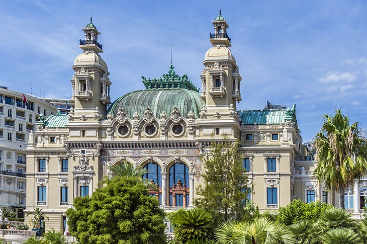

The famous Formula One Monaco Grand Prix race takes place in Monte-Carlo every year on the last weekend in May. This is the only car race in the world that is held on city streets. The course runs from the Boulevard Albert 1 up toward Place du Casino and around the harrowing turn in front of the Monte-Carlo Fairmont Hotel.
The Monte-Carlo Opera House, built in 1878, it was designed by Charles Garnier, the architect of the Opera House in Paris. The auditorium of the Opera House, called the "Salle Garnier" is entirely decorated in red and gold, with a profusion of intricate bas-reliefs, amazing frescoes, and striking sculptures. The Salle Garnier was inaugurated by Sarah Bernhardt in 1879. For more than a century, opera and ballet have entertained audiences here, and the Opera House has welcomed many world-class opera singers.
Backed by a dramatic cliffside, Monaco's waterfront La Condamine district centers around the city's largest harbor. The deep-water Port Hercule was constructed between 1901 and 1926 to provide a large number of moorings. There is berthing space for over 500 vessels. Many luxury yachts are docked here, including the Prince's private vessel. Monaco has a prestigious Yacht Club at the Port Hercule marina. The Yacht Club de Monaco on Quai Louis II brings together more than 2,500 members (private yacht owners) from 73 different countries. The Yacht Club was founded by Prince Rainier III in 1953. In keeping with its high-profile image, the club hosts regattas and yacht shows such as Monaco Classic Week.